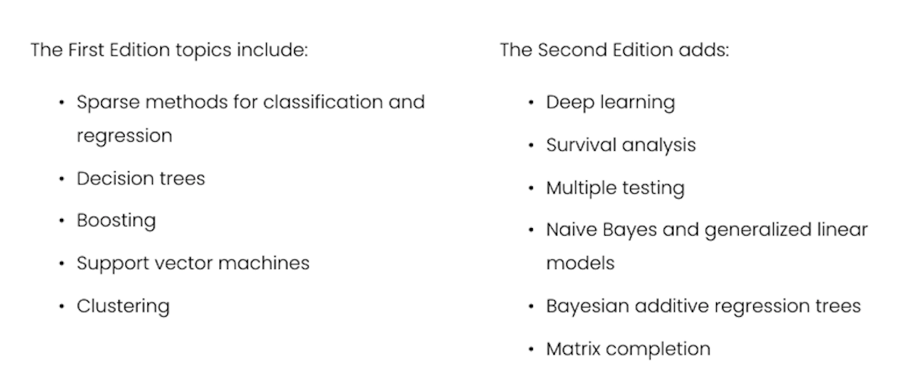

Notes
What is statistical learning?
Before we dive into the book, let’s take a step back and think about what statistics is.
“… what is statistics? In order to understand statistics, to compress them, you need to understand what it is about the world that creates those statistics…”
First and foremost, the statistical learning tools in this book are a set of tools for understanding and working with data. And data is a means to understand the world.
The book focuses on two types of statistical learning - supervised learning, and unsupervised learning.
- Supervised: Building a model to learn - from labelled data - how to predict the right output for a given input:
- Predict
wagefromage,education, andyear. - Predict
market directionfromprevious days' performance.
- Predict
- Unsupervised: find relationships and structure in data without learning from labelled data.
- Identify clusters within cancer cell lines
- Reduce dimensions of high-dimensional data.
Pre-reqs
From the book:
“We expect that the reader will have had at least one elementary course in statistics… Background in linear regression is also useful, though not required… The mathematical level of this book is modest, and a detailed knowledge of matrix operations is not required… Previous exposure to a programming language, such as MATLAB or R, is useful but not required.”
Why ISLP?
- “Facilitate the transition of statistical learning from an academic to a mainstream field.”
- Machine learning* is useful to everyone, let’s all learn enough to use it responsibly.
- Python “labs” make this make sense for this community!
Premises of ISLP
From Page 9 of the Introduction:
- “Many statistical learning methods are relevant and useful in a wide range of academic and non-academic disciplines, beyond just the statistical sciences.”
- “Statistical learning should not be viewed as a series of black boxes.”
- “While it is important to know what job is performed by each cog, it is not necessary to have the skills to construct the machine inside the box!”
- “We presume that the reader is interested in applying statistical learning methods to real-world problems.”
Notation
- \(n\) = the number of distinct data points or observations
- \(p\) = the number of variables used for predictions
- \(x_{ij}\) = the value of the \(j\)th variable for the \(i\)th observation
- \(\mathbf{x}\) = a vecotr (bolded lower case)
- \(\mathbf{X}\) = an \(n \cdot p\) matrix, whose \((i, j)\)th element is \(x_{ij}\)
- \(\mathbf{X^T}\) = the transpose of the matrix (column and row indices switched)
- \(X\) = random variable (non bolded capital)
- \(\mathbf{AB}\) = the matrix multiplication of \(A \cdot B\) - primer
Notation - Matrices & Vectors
Matrices are generally written as the pmatrix in LaTeX:
\[ \mathbf{X} = \begin{pmatrix} x_{11} & x_{12} & \cdots & x_{1p} \\ x_{21} & x_{22} & \cdots & x_{2p} \\ \vdots & \vdots & \ddots & \vdots \\ x_{n1} & x_{n2} & \cdots & x_{np} \end{pmatrix} \]
I include how to write that in LaTeX here:
\mathbf{X} =
\begin{pmatrix} x_{11} & x_{12} & \cdots & x_{1p} \\
x_{21} & x_{22} & \cdots & x_{2p} \\
\vdots & \vdots & \ddots & \vdots \\
x_{n1} & x_{n2} & \cdots & x_{np}
\end{pmatrix}
Tip
Use a verbatim code chunk when you want to print the output as-is!
And vectors (matrices with 1 column) are written:
\[ \begin{pmatrix} x_{i_{1}} \\ x_{{i_{2}}} \\ \vdots \\ x_{ip} \end{pmatrix} \]
I include the raw LaTeX here:
What have we gotten ourselves into?
An Introduction to Statistical Learning (ISL by James, Witten, Hastie and Tibshiraniis), is a collection of modern statistical methods for modeling and making predictions from real-world data.
It is a middle way between theoretical statistics and the practice of applying statistics to real-world problems.
It can be considered as a user manual, with self-contained Python labs, which lead you through the use of different methods for applying statistical analysis to different kinds of data.
- 2: Terminology & main concepts
- 3-4: Classic linear methods
- 5: Resampling (so we can choose the best method)
- 6: Modern updates to linear methods
- 7+: Beyond Linearity (we can worry about details as we get there)
Where’s the data?
We’ll look at this data in more detail below.
Some useful resources:
- the book page: statlearning.com
- pdf of the book: ISLRv2_website
- ISLP labs
- course on edX: statistical-learning
- youtube channel: playlists
- exercise solutions: applied solutions
- Repo for the bookclub
Some more theoretical resources:
- The Elements of Statistical Learning (ESL, by Hastie, Tibshirani, and Friedman) ESLII
What is covered in the book?
The book provides a series of toolkits classified as supervised or unsupervised techniques for understanding data.
The second edition of the book (2021) contains additions within the most updated statistical analysis.
How is the book divided?
The book is divided into 13 chapters covering:
- Introduction and Statistical Learning:
- Supervised Versus Unsupervised Learning
- Regression Versus Classification Problems
Linear statistical learning
- Linear Regression:
- basic concepts
- introduction of K-nearest neighbor classifier
- Classification:
- logistic regression
- linear discriminant analysis
- Resampling Methods:
- cross-validation
- the bootstrap
- Linear Model Selection and Regularization: potential improvements over standard linear regression
- stepwise selection
- ridge regression
- principal components regression
- the lasso
Non-linear statistical learning
Moving Beyond Linearity:
- Polynomial Regression
- Regression Spline
- Smoothing Splines
- Local Regression
- Generalized Additive Models
Tree-Based Methods:
- Decision Trees
- Bagging, Random Forests, Boosting, and Bayesian Additive Regression Trees
Support Vector Machines (linear and non-linear classification)
Deep Learning (non-linear regression and classification)
Survival Analysis and Censored Data
Unsupervised Learning:
- Principal components analysis
- K-means clustering
- Hierarchical clustering
Multiple Testing
Each chapter includes 1 self-contained R lab on the topic and exercises
Some examples of the problems addressed with statistical analysis
- Identify the risk factors for some type of cancers
- Predict whether someone will have a hearth attack on the basis of demographic, diet, and clinical measurements
- Email spam detection
- Classify a tissue sample into one of several cancer classes, based on a gene expression profile
- Establish the relationship between salary and demographic variables in population survey data
(source)
Datasets provided in the ISLP package
The book provides the ISLP Python package with all the datasets needed the analysis.